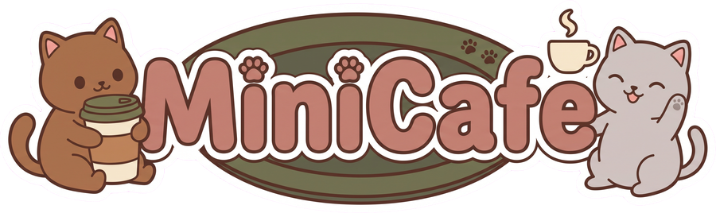
Керуйте затишним кафе, де гості — котики
Ізометрична гра про маленьке кафе: приймайте замовлення, варіть каву, наймайте офіціанта та шеф-кухаря, відкривайте літню терасу й стежте, щоб жоден котик не пішов голодним.

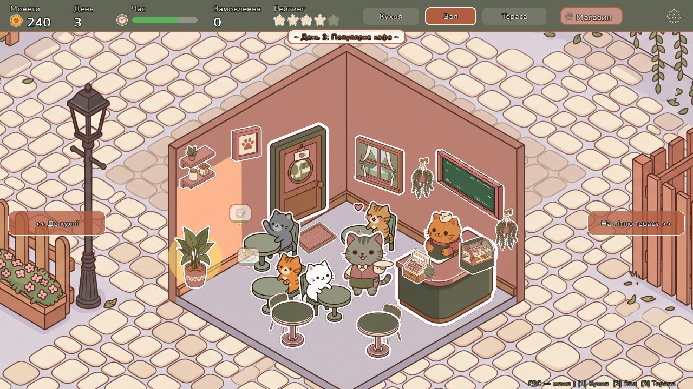
Один день — одна зміна в кафе
Кожен ігровий день триває 3 хвилини. Гості приходять, чекають, їдять і платять. Чим краще сервіс — тим вищий рейтинг і більше монет на розвиток кафе.
Три кімнати
Затишний зал, справжня кухня зі своєю плитою й духовкою та літня тераса з видом на двір. Між кімнатами можна перемикатися одним кліком.
Розвиток і магазин
Заробляйте монети та купуйте покращення: офіціанта, терасу, шеф-кухаря, нові страви, килимок біля дверей, VIP-крісло й велику монстеру.
День і вечір
До кінця зміни двір плавно змінюється: на бруківці з'являється вечірнє світло, а ліхтар біля кафе починає світитися.
Рейтинг кафе
Задоволені гості піднімають рейтинг, а ті, що пішли без замовлення, — знижують. Менше трьох зірок, і кафе зачиняється.
Живі персонажі
Кожен котик має свій характер і терпіння. Персонал говорить, що саме робить, і сам перебігає між кімнатами.
Статистика
Екран «Статистика» показує найкращі страви, виручку по днях, роботу персоналу й прибутковість — усе з бази даних.
Команда кафе та гості
Всі працівники — котики. Двох із них потрібно найняти в магазині, і кафе одразу стає схожим на справжнє.
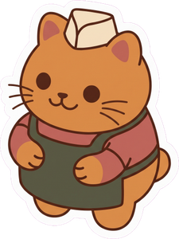
Бариста
Рудий котик за барною стійкою. Варить каву, чай, капучино, лате та айс-лате, видає печиво, круасани й тортики з вітрини.
З першого дня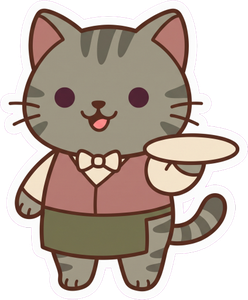
Котик-офіціант
Приймає замовлення, відносить їх на кухню або до стійки, а потім сам забирає готове й несе гостям, навіть на терасу.
120 монет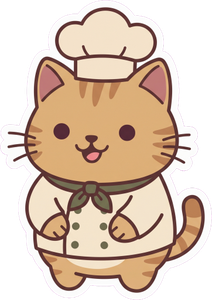
Шеф-кухар Мурчик
Відкриває кухню й нові страви. Веде до трьох замовлень одразу, ходить від плити до духовки й столу та гукає офіціанта, коли страва готова.
160 монетГості-котики
Шість окрасів, і в кожного свій настрій: котик сідає, обирає страву, чекає, їсть і платить.
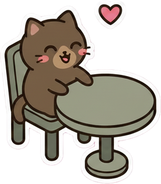
Шоколадкашоколадний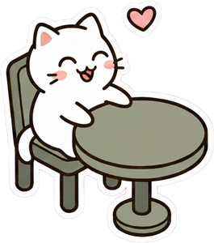
Кремкакремовий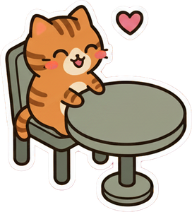
Рудикрудий смугастий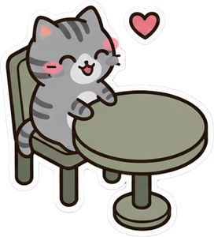
Сіренькасірий таббі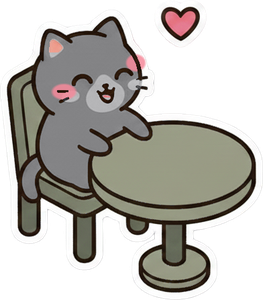
Світлячоксвітло-сірийЗаглянемо всередину
Усі кадри зроблено просто з гри.

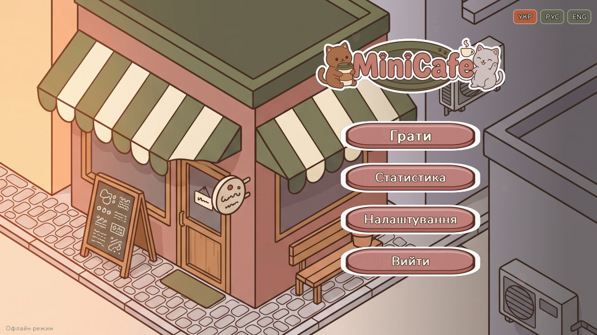

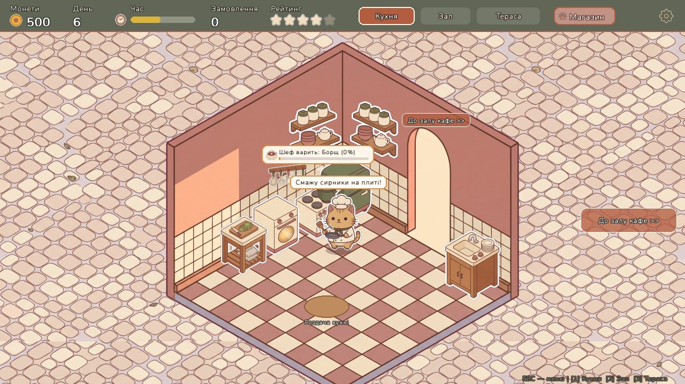

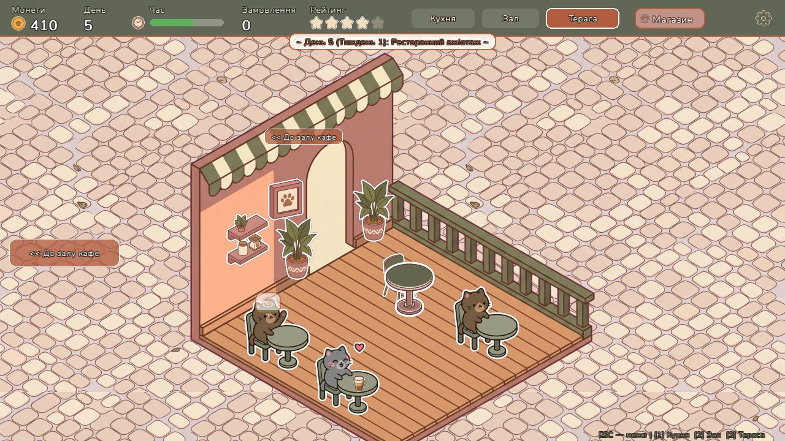

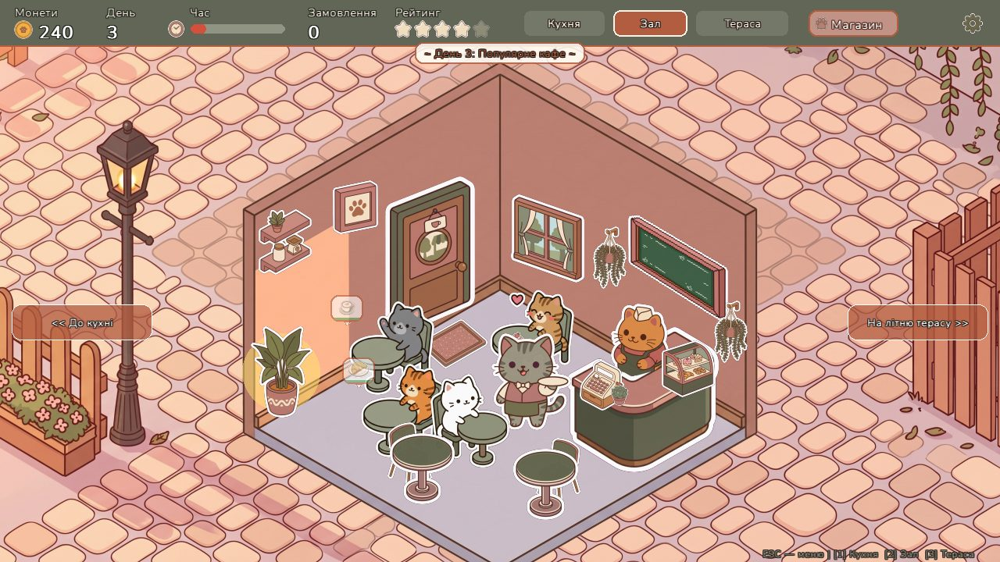

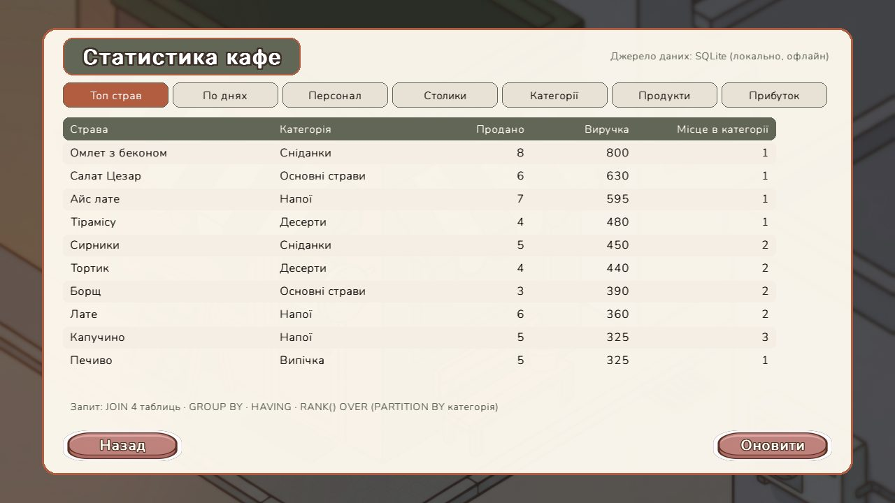
Керування — лише мишею
Гра навчається за один день. Ось як проходить типове замовлення:
- Гість сідає за столикВін на хвилинку обирає страву, а потім над ним з'являється бульбашка із замовленням. Терпіння гостя поступово закінчується.
- Клікніть по столикуБез офіціанта ви приймаєте замовлення самі й клікаєте по баристі, щоб він почав готувати. З офіціантом він сам прийме замовлення й передасть його на кухню.
- Бариста або кухар готуєНапої й випічка — бариста, страви кухні — шеф-кухар. Над столиком видно, як просувається готовка.
- Подайте стравуГотове блюдо чекає на стійці або на кухні. Заберіть його й клікніть по столику (або тільки клікніть по столику, якщо є офіціант).
- Отримайте монети й рейтингЗадоволений гість платить і піднімає рейтинг. Витрачайте монети в магазині й розвивайте кафе.
Під капотом
Технології
- Мова
Pythonта бібліотекаpygame-ce - База даних
PostgreSQLна Railway - ORM
SQLAlchemyдля всіх запитів гри - Без інтернету працює на локальній
SQLite - Один
.exeзбирається через PyInstaller
Складні запити до БД
Екран «Статистика» будується запитами з JOIN кількох таблиць, GROUP BY / HAVING, підзапитами та віконними функціями (RANK() OVER, SUM() OVER). Кожна вкладка показує, який саме прийом SQL вона використовує.
Вихідний код відкритий: github.com/AriSnowie97/minigame_minicafe_bd
Завантажте MiniCafe
Один файл для Windows. Розпаковувати нічого не треба: запустіть його подвійним кліком і граймо.
⬇ MiniCafe.exe- Завантажте
MiniCafe.exeі запустіть його. - Якщо Windows показала «Windows захистила ваш ПК», натисніть «Докладніше» → «Виконати в будь-якому разі». Файл не підписаний, тому система його не знає.
- Перший запуск може тривати кілька секунд: гра розпаковує свої картинки.
- Інтернет не обов'язковий, а з ним у грі працює онлайн-база та статистика.
Усі версії: сторінка релізів на GitHub